Zakázkové zpracování přírodního a technického kamene v Olomouci – kuchyňské a koupelnové desky, schodiště, parapety, obklady krbů a hřbitovní architektura
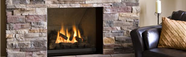
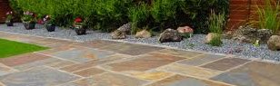
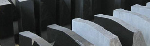
Veškeré autentické informace, historie, provozní údaje a identifikační data naší společnosti.
Společnost ORTECH.CZ s.r.o. se sídlem a kamenickou dílnou v Olomouci - Chválkovicích (Chválkovická 55, IČO 25884502) se zabývá kompletním zakázkovým zpracováním přírodního kamene (žula, mramor, pískovec, travertin) a umělého tvrzeného kamene.
Naši výrobu dělíme do tří hlavních oblastí: 1. Interiéry (kuchyňské pracovní desky, ostrůvky a zádové obklady, koupelnové desky, vnitřní schodiště, obklady krbů a vnitřní parapety), 2. Exteriéry (venkovní schody s protiskluzovou úpravou opálením či tryskáním, venkovní parapety, sokly a fasády) a 3. Hřbitovní architektura (urnové hroby, jednohroby, dvojhroby, krycí desky, sekání písma a doplňky).
Zajišťujeme kompletní servis od odborného poradenství s výběrem konkrétní desky kamene v naší provozovně, přes přesné zaměření na stavbě, strojní opracování hran a výřezů až po dopravu a profesionální montáž.
| Obchodní firma | ORTECH.CZ s.r.o. |
| Provozovna a vzorkovna | Chválkovická 55, 779 00 Olomouc - Chválkovice |
| IČO / DIČ | 25884502 / CZ25884502 |
| Otevírací doba | Pondělí – Pátek: 8:00 – 16:00 (mimo pracovní dobu po tel. dohodě) |
| Telefony | +420 608 742 145 | +420 585 312 680 |
| ortech@ortechcz.cz |
Přesné výřezy pro spodní i horní montáž dřezů, varných desek a baterií, leštěné a fazetované hrany.
Mrazuvzdorné žulové prvky s protiskluzovým opáleným (flambovaným) nebo pískovaným povrchem.
Výroba, montáž a rekonstrukce hrobů v Olomouci a celém kraji včetně sekání a zlacení nápisů.
Nero Impala, Nero Zimbabwe, Baltic Brown, Giallo California, Madura Gold, Multicolor Red, Olive Green, Shiwakashi, Yellow River.
Kompletní rozpis všech kategorií, materiálů, technologií a služeb podle našeho katalogu.
Žulové pracovní desky představují nejodolnější povrch do kuchyně – odolávají vysokým teplotám (odložení horkého hrnce), poškrábání nožem, kyselinám i vlhkosti.
Přírodní kámen vyniká vysokou tepelnou akumulací a nadčasovou elegancí u krbových těles i vnitřních schodišť.
Přírodní žula je prakticky nezničitelný materiál pro venkovní použití – odolává mrazu, posypovým solím i mechanickému zatížení.
Kompletní výroba a osazení pomníků z ušlechtilé žuly na hřbitovech v Olomouci a okolí se zárukou dlouhé životnosti.
Přehledně zpracované kompletní tabulky, ceníky, technické specifikace a referenční zakázky.
Přehled 9 nejoblíbenějších žul z našeho vzorníku pro kuchyňské desky, schodiště a pomníky.
| Název přírodní žuly | Barevnost a charakter kresby | Hlavní doporučené využití |
|---|---|---|
| Nero Impala | Tmavě šedá až antracitová jemnozrnná žula s kovovým odleskem | Kuchyňské desky, schody, parapety, moderní pomníky |
| Nero Zimbabwe | Hluboce černá homogenní žula (v lesku i v úpravě Antik/kůže) | Luxusní kuchyňské linky a ostrůvky, krby, exkluzivní nápisní desky |
| Baltic Brown | Hnědá finská žula s charakteristickými kulatými zrny (rapakivi) | Parapety, schodiště, obklady krbů, krycí desky hrobů |
| Giallo California | Teplý zlato-žluto-hnědý odstín s jemnou vlnitou kresbou | Kuchyňské a koupelnové desky, krby, interiérové obklady |
| Madura Gold | Zlatavá žula s teplými medovými a jantarovými tóny | Prosvětlení kuchyňských linek, koupelny, obklady krbů |
| Multicolor Red | Výrazná červeno-černá žula s dynamickým fládrováním | Pomníková architektura, venkovní schody, parapety |
| Olive Green | Tmavě zelená žula s jemnými olivovými a černými žilkami | Atypické pracovní desky, koupelny, solitérní pomníky |
| Shiwakashi (Shivakashi) | Světlá slonovinově-růžová žula s jemnou kresbou | Koupelnové desky, parapety, světlé interiérové schody |
| Yellow River | Exkluzivní žluto-zlatá žula s výraznou přírodní řekou žil | Designové kuchyňské ostrůvky, krbové stěny, luxusní stoly |
Prohlédněte si kompletní databázi našich autentických fotografií rozdělenou do přehledných kategorií. Kliknutím na libovolný snímek otevřete detailní náhled na celou obrazovku.
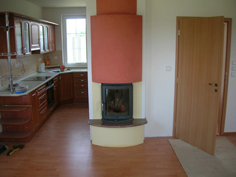
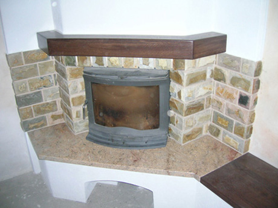
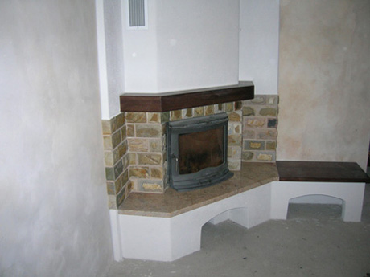
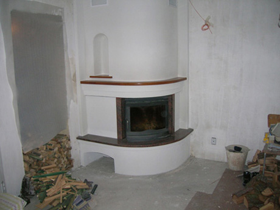
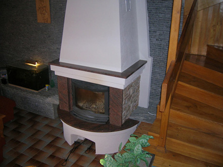
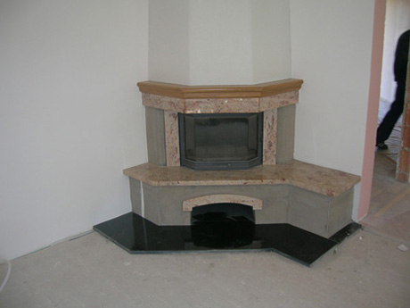
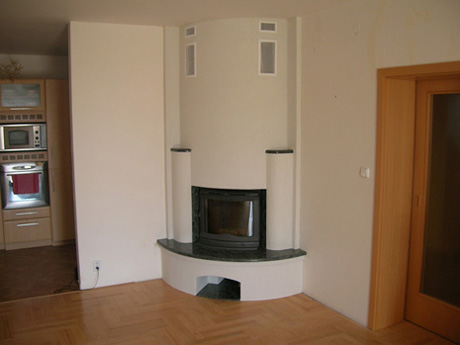
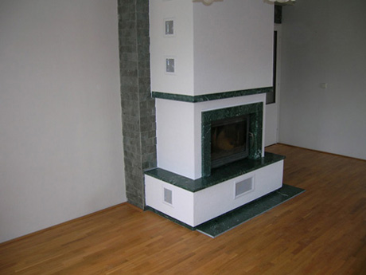
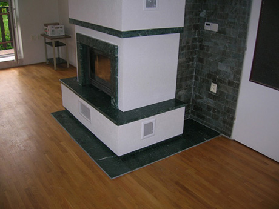
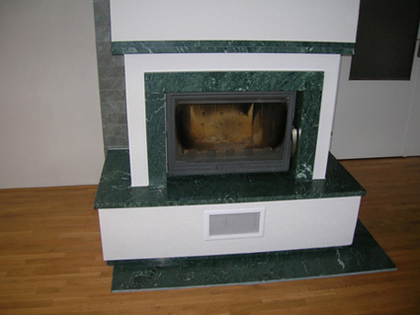
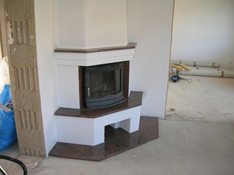
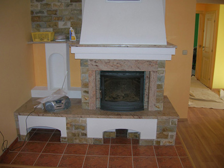
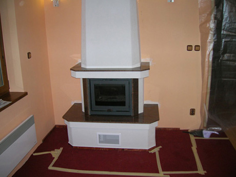
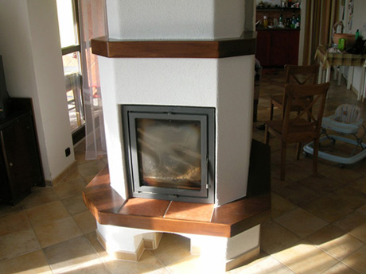
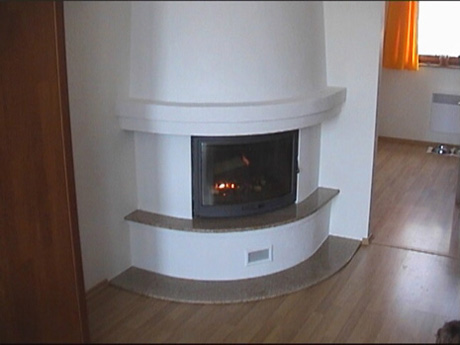
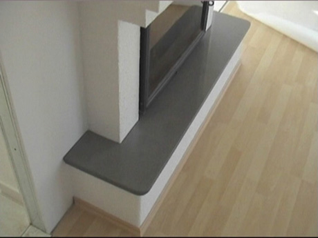
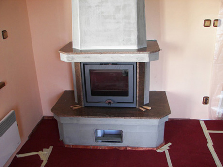
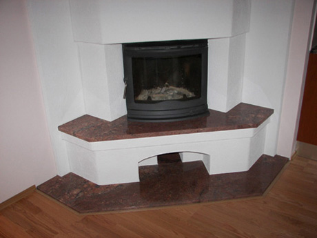
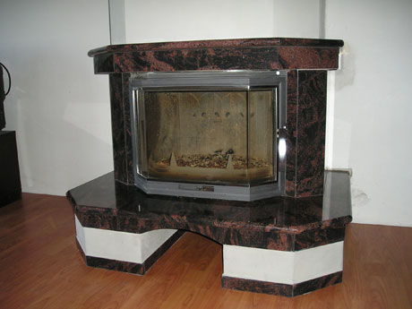
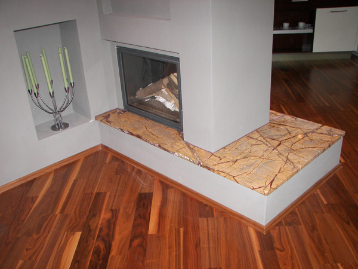
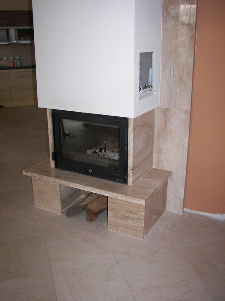
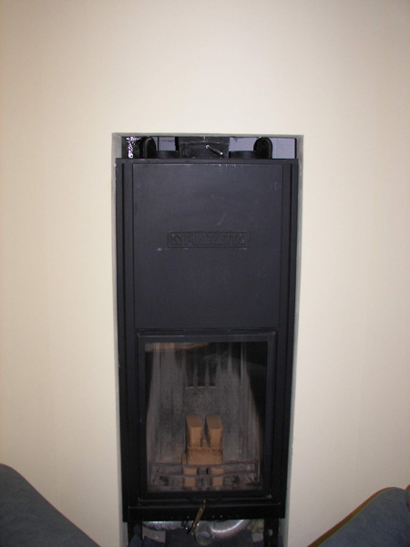
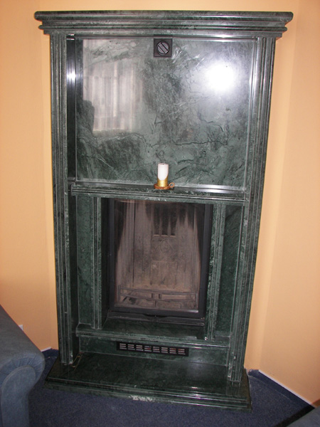
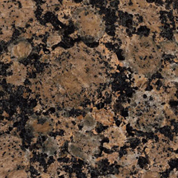
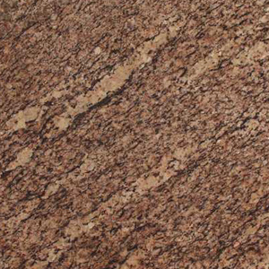
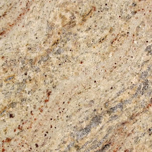
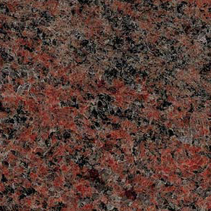
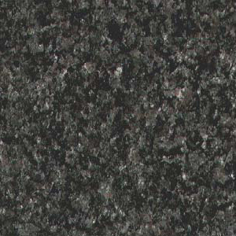
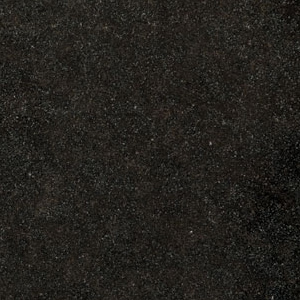
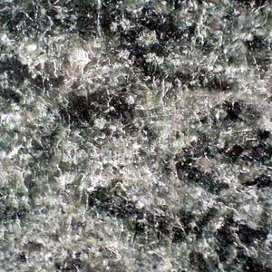
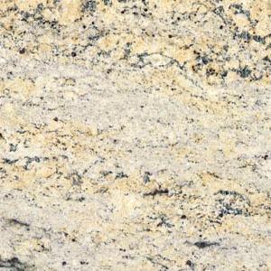
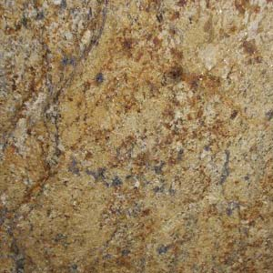
Neváhejte nám zavolat, napsat e-mail nebo nás osobně navštívit na uvedené adrese.
Chválkovická 55, 779 00 Olomouc - Chválkovice
Po–Pá: 8:00 – 16:00 (mimo pracovní dobu po telefonické dohodě)
IČO: 25884502 | DIČ: CZ25884502 | Doména: ortechcz.cz
Vyplňte krátký formulář níže – ozveme se vám zpět v nejbližším možném termínu.